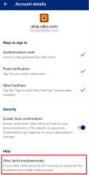

Okta Verify 翻了个底朝天：那些没人告诉你的隐藏入口和冷门自救技巧
你可能以为 Okta Verify 就是个弹推送、出动态码的认证工具——其实它藏着排障器、补救通道、实时同步等一套官方默认不显眼的内部机制，出问题时能省你半小时 IT 工单。
你可能以为 Okta Verify官网 就是个弹推送、出动态码的认证工具——界面简单，功能一目了然，没什么好深挖的。但用了快两年，我发现它藏着一套官方默认不显眼的内部机制：排障入口、自动补救通道、实时状态同步……出问题时能省你半小时 IT 工单，甚至能让你在 IT 还没回邮件之前就把事搞定。
账户详情页里藏着个官方排障器，绝大多数人不知道
每次应用出问题（推送不弹、动态码被拒、FastPass 按钮消失），你的第一反应是什么？删应用重装？安装包从下载拿也不贵，但先别急——给 IT 发工单？
我以前也是这么干的，直到有一次 IT 回复我：「你有没有试过打开账户详情页里的 troubleshooter？」
Okta Verify 内置了一个官方排障器，藏在每个账户的详情页最底下。进入路径是：首页点你的那个组织账户 → 滚到最底部 → 点「Okta Verify troubleshooter」。点进去之后它会逐项自检：设备时间准不准、系统里的生物识别还活着吗、锁屏策略有没有和服务端对齐、推送通道是不是正常。每一项旁边都有一个小勾或感叹号，点感叹号直接给修复指引。
官方文档把这个排障器列为「排障起点」，但应用主界面上没有任何入口提示。只有账户详情页里那个不起眼的链接。我后来查了 Okta 的公开帮助中心，才发现有相当多的故障其实排障器跑完就能解决——包括我之前遇到的「换屏后生物识别失效」「推送反复弹确认循环」这两个死循环。

生物识别失效后，应用会偷偷给你开一条补救通道
「换了屏之后验证就再也过不去了」「删了一个指纹之后推送开始抽风」——这类抱怨在应用商店评论里不少。大多数人遇到这种情况，要么重装应用，要么找 IT 重置账户。
其实应用自己知道怎么修。
当系统侧的生物识别凭据变化之后（增删指纹、换屏、系统大版本更新），Okta Verify 会在账户详情页的安全区动态插入一个或多个「补救提示」条目——比如「开启锁屏确认」「启用生物识别确认」「锁屏设置与应用不同步」。这些条目不是固定的，是应用检测到异常状态后自动生成的。点进去按指引操作，应用会让你重新走一遍生物识别的确认流程，把设备的当前凭据和应用重新对齐。
官方把这套机制叫 remediation（补救），但应用里完全没有「remediation」这个词，只显示一行平实的提示文字。如果你的应用里突然多出一条你没见过的提示，先别急着关掉——那很可能就是应用在告诉你：「我检测到了问题，给你修的路径就在这里。」
管理员改了你的验证方式，账户详情页会实时同步
你有没有过这种经历：今天还能用 FastPass 一键登录，第二天登录页突然就没了这个选项，只剩动态码和推送？
我之前以为这是应用 bug，直到某次 IT 后台调整了我的验证策略，我亲眼看着账户详情页里的 FastPass 勾选标记在几秒之内自动消失了。
账户详情页的所有状态都是实时与 Okta 服务端对齐的——管理员在后台给你加了新的验证方式、关掉了 FastPass、强制启用了生物识别「必须」档位，这些变更会在详情页里自动反映。反过来，如果你在详情页关掉了某个确认项（比如锁屏确认），下次登录就立即生效，不需要重启应用。
这个实时同步的特性没在应用里主动告诉你，但能帮你快速定位很多「莫名其妙的变化」：登录页少了一种方式，先看详情页的勾选状态——没勾 = 管理员刚给你关了，去问管理员；勾了但登录页不显示 = 浏览器环境问题（比如无痕模式、旧版 Chrome）。
面板串号？浏览器退个登录就行，不用清缓存也不用重装
这是我最近才挖到的一个冷知识。
有一天我从 Okta Verify 里打开公司的应用面板，出来的却是同事的账户面板——内容、权限、待办全是他的。我慌了：是不是账户串了？是不是应用有 bug？
结果修法简单到离谱：在手机浏览器里退个登录，重新登自己的，再回来打开面板就对了。
原理是这样的：Okta Verify 里打开的面板其实是通过手机浏览器的 WebView 渲染的。如果你之前在手机浏览器里登录过同事的 Okta 账户（比如借手机帮他查过东西），浏览器就记住了那个会话。之后你从应用入口打开面板，浏览器还端着旧会话不放——把同事的面板给你带了出来。
修法就是两步：浏览器里退出旧会话 → 重新登录自己的。不需要清整个浏览器缓存，不需要重装应用，应用侧根本没有问题。Okta Verify文档里把这个归类为「浏览器会话残留」，但大多数人遇到第一反应都是清缓存或重装，白白浪费时间。
锁屏确认有个「必须」档位，开关会被直接禁用
你是不是在账户详情页的安全区看到过一个灰色的锁屏确认开关，点也点不动？
那不是 bug，是组织策略把锁屏确认设成了「必须」档位。
Okta 的验证方式有三种策略档位：可选（你自己决定开不开）、推荐（默认开但能关）、必须（强制开启，开关禁用）。当管理员把锁屏确认或生物识别确认设为「必须」时，详情页里对应的开关会直接变成灰色禁用状态。你关不掉，也绕不过——这是服务端强制的。
很多人以为开关灰色是应用坏了，去 IT 报修才知道是策略变了。下次再遇到这种情况，先看一眼开关旁边的小字提示，通常会写着「由组织策略管理」，这就不是应用问题，是管理员那边的事了。
一个小提醒：动生物识别之前先确认还有备用路径
最后说一个我踩过的坑。
之前换了屏幕总成，新屏的指纹模块有问题，系统里录不上指纹。Okta Verify 里的生物识别确认立刻就失效了——而我当时设的是「必须」档位，FastPass 也因为生物识别问题被禁用，推送验证又离不开锁屏确认。结果就是：没有生物识别，没有锁屏确认，Push 需要锁屏确认，FastPass 被禁用，只剩动态码。
动态码本身没坏，但每次登录都要掏出手机输六位码，体验直接退回到原始社会。
预防的办法很简单：删除指纹、维修换屏、恢复手机这类动作之前，先确认自己还有另一条能用的验证路径。动态码通常不受生物识别影响——如果你只开了生物识别这一条，那就是唯一路径，它失效时你就麻烦了。要么先在 Okta Verify 里多开一条推送或口令确认，要么让 IT 临时把你的策略从「必须」放宽到「推荐」。
收尾
Okta Verify 这个应用，表面上就是个弹推送、出六位码的小工具。但往下挖，官方在里面藏了不少贴心但不显眼的设计——排障器、补救通道、实时同步、策略档位提示——都是为了让你在出问题时能自己搞定，不用每次都发工单。毕竟 IT 也挺忙的，能自己解决的就自己解决呗。
我这套「翻箱倒柜」的笔记整理成了一份完整的使用手册，放在三个仓库里都能拿到：GitHub 上有安卓版目录下的完整文档，Gitee 和 GitCode 也同步了同一份资料，国内访问哪个快就用哪个。